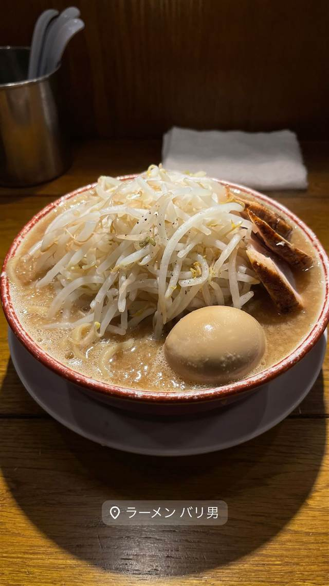
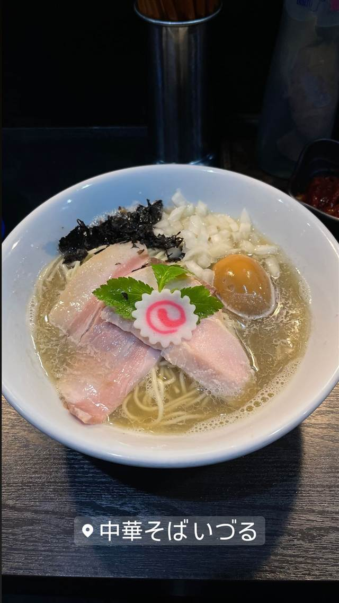

らーめんバリ男 大門店
久留米仕込みの呼び戻し製法によるクリーミーな豚骨スープ
ラーメン バリ男
新橋本店から広がる二郎系インスパイア「バリ男」。ラーメン二郎の直系ではないが、久留米ラーメン仕込みの「呼び戻し製法」によるクリーミーな豚骨スープと特注の極太麺で独自の二郎系を確立。大門店はデカ盛りファンにも人気が高い。
TRIVIA
豆知識
- 店主はラーメン二郎の直系ではなく、独自に二郎系を確立した
- つけ麺の名店「二代目つじ田」の創業者とは高校の先輩後輩の間柄
- 久留米ラーメンの技法「呼び戻し製法」を豚骨スープに取り入れている
REVIEWS
世間の評判
90.1ラーメンDB3.48食べログ
個性的なスープと小さめの器
- 久留米ラーメンを思わせる独特な豚骨臭のスープを評価する声がある
- 器が小さく食べにくいと感じる人が複数いる
- 二郎系にしてはまろやかでパンチが弱いと感じる声もある
ラーメンデータベース 口コミ47件・最新 2025-11
| 創業 | 新橋本店を開業して15年以上（正確な創業年は未確認）。 |
|---|---|
| 系譜 | 二郎系インスパイア。「ラーメン二郎」直系店との接点はなく、屋号を名乗ったこともない独自路線。オーナー岩崎誠氏は、つけ麺の名店「めん徳 二代目つじ田」創業者・辻田雄大氏と高校時代の先輩後輩の間柄。 |
| 看板 | 大ラーメン（ヤサイアブラカラメ、豚3枚など総重量1kg超えのデカ盛りメニューも） |
| こだわり | 久留米ラーメンの「呼び戻し製法」を取り入れたクリーミーな豚骨スープ。三河屋製麺に特注した極太麺。自家製の味変調味料「特製唐花」を使用。 |
| どこから | 都心 |
| 営業時間 | 月〜金 11:00-23:00 土・日 11:00-15:00、17:00-21:00 |
| 予算 | 昼 ～¥999 夜 ～¥999 |
| 場所 | 大門・浜松町 東京都港区芝大門2-1 |
| メモ | 大門駅徒歩3分。デカ盛り志向の二郎系として知られる。 |
食べたもの：二郎系ラーメン
NEARBY
近い店・同じ系統の店
-
 ★
二郎系(インスパイア) 新小岩駅
Hi-Fat Noodle BUTCHER'S
「脂と肉を武器にする」がコンセプトの二郎系2号店
昼 ¥1,000～¥1,999 夜 ¥1,000～¥1,999
★
二郎系(インスパイア) 新小岩駅
Hi-Fat Noodle BUTCHER'S
「脂と肉を武器にする」がコンセプトの二郎系2号店
昼 ¥1,000～¥1,999 夜 ¥1,000～¥1,999
-
 ★
二郎系(インスパイア) 高田馬場駅(早稲田口)
ラーメン 池田屋 高田馬場店
京都一乗寺発の二郎系が東京初進出、豚の旨味濃厚な一杯
昼 ¥1,000～¥1,999 夜 ¥1,000～¥1,999
★
二郎系(インスパイア) 高田馬場駅(早稲田口)
ラーメン 池田屋 高田馬場店
京都一乗寺発の二郎系が東京初進出、豚の旨味濃厚な一杯
昼 ¥1,000～¥1,999 夜 ¥1,000～¥1,999
-

★ 醤油・中華そば 大門駅 中華そば いづる セメント系と呼ばれる濃厚煮干しファンの聖地 昼 ¥1,000～¥1,999 夜 ¥1,000～¥1,999 -
 ★
二郎系(インスパイア) 東北沢駅／駒場東大前駅
千里眼（センリガン）
夏季限定の冷やし中華も人気の二郎系インスパイア
昼 ～¥999 夜 ～¥999
★
二郎系(インスパイア) 東北沢駅／駒場東大前駅
千里眼（センリガン）
夏季限定の冷やし中華も人気の二郎系インスパイア
昼 ～¥999 夜 ～¥999
-
 ★
二郎系(インスパイア) 大山
自家製麺 No11
富士丸出身の店主が繰り出す350g極太麺の二郎系
夜 ¥1,000～¥1,999
★
二郎系(インスパイア) 大山
自家製麺 No11
富士丸出身の店主が繰り出す350g極太麺の二郎系
夜 ¥1,000～¥1,999
-
 ★
二郎系(インスパイア) 東大前
ラーメン用心棒 本号
千里眼の系譜を継ぐ、濃厚豚骨醤油と極太麺のまぜそば
昼 ～¥999 夜 ¥1,000～¥1,999
★
二郎系(インスパイア) 東大前
ラーメン用心棒 本号
千里眼の系譜を継ぐ、濃厚豚骨醤油と極太麺のまぜそば
昼 ～¥999 夜 ¥1,000～¥1,999